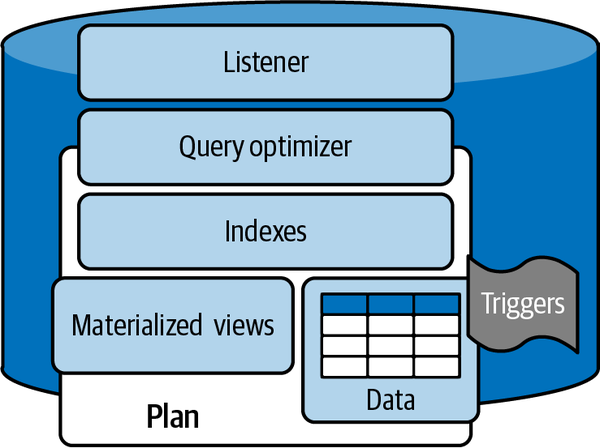
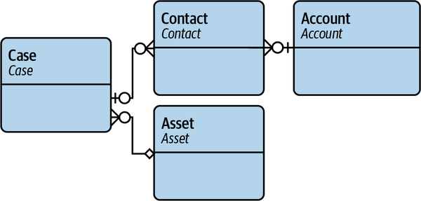
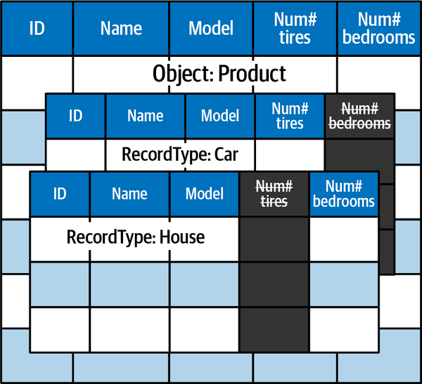

As architects, we need to understand the shape of data models and the ways to interact with them. Successful enterprise systems work by maximizing efficiencies and minimizing resistance. Resistance can be defined as the opposite of ease: anything that requires extra effort or resources to maintain creates resistance.
Each platform does different things in different ways. When creating solutions with different platforms, it’s important to understand how easily their data models can be shared or work together. For example, Salesforce can process updates to single data records quickly and easily. If you need to work with other systems that can also perform fast and easy single data record updates, those systems can be expected to work together with little resistance.
On the other hand, relative to other systems, Salesforce is not as fast at updates that involve large numbers of data records. If you want to integrate with a system that can natively handle large record transfers or updates much faster than Salesforce, you have resistance. You might need to add an intermediary system, like a high-performance data store. Alternatively, you could build a custom inbound or outbound processing component to manage the extra time required to complete the operation. This additional infrastructure or code is the resistance. Another example is dealing with complex or deep hierarchies. Salesforce has only limited support for displaying relationships that require complex joins with other objects. It’s a fairly common workaround within Salesforce, especially for report building, to flatten data to support reporting requirements. Hierarchical data is copied to individual records so that reports can be built and include relationships with other objects. Other systems don’t have this quirk/limitation and may store hierarchies in a completely different way. Sharing hierarchies between systems with different quirks can require more work. This is another form of resistance.
Architects design solutions anticipating resistance and leveraging efficiencies. As Salesforce builds and acquires more functionality that better supports scale, part of your job will be identifying the “tipping point” where a smaller/cheaper/simpler solution is no longer a good fit.
We’ll begin this chapter by discussing the most important Salesforce data concepts at the row level, then work our way up to the more conceptual I/O and pattern levels. We’ll also go over the implications of all of Salesforce’s (the application) data being accessible only via web service APIs. After we talk about how data is organized inside Salesforce, we’ll move on to external relationships and data sources.
The following concepts and components are common to many relational database management systems (RDBMSs). While some of them are not exposed for users or developers to interact with, they still play a role, and it’s important to understand how they might relate to other systems you are working with:
The listener is the system process that is called by remote systems that receives requests for data. This is where service account credentials are processed. (This is at the system level; when data is published to a web service, other logical layers may be involved.)
The query optimizer parses a query and forms the “plan” for how to retrieve the requested data. You can work with the query optimizer inside the Salesforce Developer Console, adjacent to the query builder.
The database system contains a variety of internal mechanisms to manage and streamline the work involved in sorting and joining data for output. These can vary within a system as well as having many differences from other types of databases.
A simple way to create an index is by converting a field or column of data that is often part of an alphabetical ordering request into numbers. It’s much easier for the query optimizer to order (sort) things by these numbers than it would be to sort them alphabetically. Remember, this sorting happens every time the data is requested. To make requests fast, indexes are usually updated whenever data is loaded or changed (i.e., on writes) so that it is always available when a read happens. This adds “work” to the write processes to make the read processes faster.
A view is a reduced section of a table or joined tables that’s defined by a query. Using views can improve performance, since the query optimizer has already figured out how to perform the data operations when the view is created.
When a view is “materialized,” not only is the structure of the query stored, but the data is also stored for a period of time. If a complicated query is performed often and the underlying data doesn’t change frequently, it can be very efficient to reuse the results for a period of time without refreshing them from the “real” data. Skinny tables in Salesforce are somewhere between views and materialized views. You can’t create, access, or modify skinny tables yourself; you have to ask your account team to set them up.
Triggers are code or scripts in a database that are run either when called or upon some event, such as a data change. Triggers can be used to listen for many types of events and perform some action before or after the event occurs. This is the most often used term for automation driven by a database change event within Salesforce. Stored procedures are not used in Salesforce.
Data in databases can be stored or processed in many different ways. It’s commonly visualized as a collection of columns and rows stored in files on a hard drive somewhere, but modern databases can store data in a variety of formats and memory structures, in files with multiple layers and nesting. A cell in a database table might contain a zero, a name, a date, or an XML structure with gigabytes of nested names, dates, and other data. You don’t always need to know the details of the data structure inside your database system, but understanding the work it has to do to maintain the data will help you build and maintain efficient applications.
Figure 3-1 shows how these components fit together in a typical RDBMS. Data queries (also called reads or selects) come in at the top and make their way to the bottom. Salesforce has a layer of software on top of these components, but when working with the software you will benefit from knowing what’s behind it. One of the many “secret sauces” of Salesforce is that the software provides most of the native functions (with added security and scalability to multiple customers) baked in.

There are several vocabulary items to absorb here. Salesforce has its own terms for rows and columns of data: tables are objects, rows are records, columns are fields. These are fairly normal variants of data container vocabulary. The terms used specifically for data manipulation language concepts can get more confusing when you combine the programming language corollaries for data types and structures. We won’t be focusing much on those in this chapter on data.
The more challenging concepts have to do with how the platform has imposed a “liberating restriction” on how relationships can be established. It’s a simplification of the type of relationships that are possible in other database systems. These differences can be hard to acclimate to for those with experience in SQL and data development. The restrictions lead to a simplicity of design choices that can make maintenance and discovery very simple.
Logic and validation are also very tightly connected to the data. All data access is passing through the application logic layer so things that are normally only relevant in the display/UI layer are active when you are accessing data. There is no direct “SQL” level access to the data even with the SOQL access points. (SOQL is an SQL variant that can be used to query Salesforce data.) Requests for data are still going through a filter of a filter of a filter. This is not an uncommon practice with multitenant or SaaS platforms. It does mean that you may need to adjust your models as you deal with Salesforce data. In other words, you may not be able to bulk import records due to a restriction that, in other systems, exists for users during application page interactions.
There are two main types of objects in Salesforce: standard objects and custom objects. (We’ll look at a few other types later in this chapter.) Standard objects are central to a given piece of Salesforce functionality and are included by default. For example, common business objects like User, Contact, and Account are available with the core platform. Other objects, like Opportunity, are only included with the Sales Cloud functionality, but even though they aren’t included in all instances, they are still called “standard.” Standard objects can have extra logic or functions tied to them. Screens, relationships, and triggers can also come packaged with standard objects. You can add additional fields and functionality to standard objects, but it’s not a great idea to remove functions from them, as doing so can have unintended consequences.
Custom objects are objects that you create yourself. You can name and build fields and relationships for these objects however you want, within some constraints (there are a handful of protected words and special character considerations to be aware of). Depending on the settings that you configure as you create them, other objects may be created at the same time behind the scenes. For example, creating a Track Field History object will cause an additional History object to be created automatically.
All objects are created with several default pieces of functionality that take a lot of work out of the traditional schema definition process. All records are automatically given an encoded identity field. The ID field is structured and contains data that can tell you what object and organization the record belongs to. Creation and modification times are kept for every record, along with the UserID of the user who created/modified the record. Change tracking can also be configured easily on any object. Deleted records can be retrieved from the Recycle Bin if needed.
Since almost all of the ecosystem’s configuration is exposed or accessible via APIs, all of the data about your configuration is referred to as metadata. You can take this as shorthand for all the config data in Salesforce. However, the term can also refer to actual user data. Additionally, Salesforce has an internal object structure called Custom Metadata (CMDT) that is more of a dimensional table structure, as opposed to relational data in the database. There are also layers of in-memory data that exist more as cache data. We won’t be covering caching in this book.
Salesforce allows you to start creating usable applications without defining a data model, but many tenured application architects struggle with the common practice of putting the user interface before the data relationships. Before building any system, application architects will build an entity relationship diagram (ERD) like the one shown in Figure 3-2.

Database performance is heavily tied to an efficient data model, regardless of how many extra safety features are added on top of the data layer. Salesforce has a Schema Builder tool to help visualize data relationships, but I find that it is not used or reviewed enough. Lack of data model management and relationship rationalization can lead to relationship sprawl and poor performance.
Relationships are constrained to four effective types. We won’t go into much detail, but you should know the terms. The implementations in Salesforce are nuanced, but these are the basics (taking some liberties for conceptual reasons):
When an object record has a pointer to another record in the same object or another object.
Like a lookup, but the child has a tighter relationship with the parent and can inherit certain permissions from it. Enabling the inheritance of attributes like permissions is a further configuration of the lookup relationship type.
A tighter relationship still. A detail record cannot exist without the master record. Deleting the master deletes the details. Details have few rights of their own; they are dependent on the master object.
This is a many-to-many relationship that requires its own object. The junction object is a detail of two master objects. It provides the linkage record between those two objects.
There are other types of relationships with different objects and concepts, but you will have to work with these for most of your in-platform data.
To maintain the simplicity of the data model, using RecordTypes is encouraged. A RecordType is an addressable collection of fields, rules, and records within an object (Figure 3-3). Addressable means that you can assign fields, screens, rules, and specifics within the object’s fields and definitions. RecordTypes connect the individual records to all of these other features. An object can have no or many RecordTypes (for example, an Account object might have Customer and Partner RecordTypes defined). Behind the scenes, a RecordType is a field on the object that points to the RecordType object as a lookup. You can lead your users to create specific RecordTypes per your application process. You should use RecordTypes any time that a logical concept overlaps with an existing logical concept or object. Drop-down fields can have different values based on their RecordType. They give you most of the abilities of a separate object while keeping the data model simple.
Core internal data terminology can be confusing. Salesforce grew up as a salesperson’s best friend. In Salesforce, the term account means customer and most often refers to the company that a salesperson is selling to. A contact is a person that works for the account (company) that a salesperson interacts with or keeps records on. A user is a person that logs into Salesforce. The user has a username and user record in Salesforce and keeps track of contacts with their sales target accounts. In other systems, an “account” is synonymous with a login identity or user account.

Triggers have long been the core of the Salesforce custom functionality capability, to the point where programming in Salesforce is generally taken to mean writing triggers. Triggers are written in the Apex language, which is a Java-esque, object-oriented, just-in-time pseudo-language. They’re their own type of Apex code, and they can call other classes that are also Apex code. It’s common for the processing performed by a trigger to be contained in a separate class that it calls, known as a helper class, as this makes it easier to reuse the trigger for other purposes. Other functions besides triggers are written in Apex (see Chapter 8), but the trigger is the main layer of data flow control.
Flows are another customization and automation layer that allow you to control the flow of data within Salesforce. Flows are built within a visual environment and can also call Apex classes.
Workflow Rules and Process Builder are two sunsetting automation layers that are invoked upon data change. These are both on a scheduled deprecation path, so you should not be creating new functions with them. Already existing workflows and processes will continue to function for some time, however, so you should be aware of these terms. We’ll talk more about all three of these in Chapter 8.
From a Salesforce perspective, all of the automation layers are executed as equal partners with an established, well-documented order of execution. In other ecosystems, SQL and triggers execute very close to the database layer. This is several layers away from the application logic, where flows and other data logic live. Triggers are usually only written by database administrators (DBAs) or data developers. Application or business logic/code is written by a different team of application developers.
Big objects have recently been added to the platform’s data ecosystem. Big objects are recommended for data storage patterns that have high numbers of records but little actual daily use (high write, low read). Forensic transaction logs and change history tracking are the most common candidates for big objects. The limitations around big objects strongly hint that they are an in-platform implementation of a NoSQL structure, similar to MongoDB or Cassandra. They can be queried, but not in the same way as normal objects, and they don’t support as many field type options as regular objects.
Big objects allow for almost infinite storage of data produced within Salesforce. However, there are still limits to the amount of data you can bring into Salesforce, so this isn’t (currently) a practical option for an enterprise object/data store. There are some hacks that can be used to get Salesforce to work with really large sets of records, but big objects are capable of handling orders of magnitude more. I’m hoping to see them mature and scale to find more frequent use as an application component in the future. For the time being, if you are working with large datasets that need to be actively consumed or sent to other systems, you’ll have to choose another system.
External objects in Salesforce are a very useful way of interacting with large sets of external data without having to build a bespoke synchronization pattern. An external object consists of an internal object that keeps an external primary key as a pointer to an outside record. Making this connection is effectively mapping the external data as if it were an internal object. There are licensing- and connection-based concerns, but this is one of the best ways to get external data available to the native functions of the platform.
There are limits to the number of external objects you can create, and other limits regarding the number of outbound connections that can affect when and how you implement them. External objects can also include mappings to unstructured files like documents and images. Working with mapped objects has many benefits, but can be quite chatty from an I/O perspective. Make sure you are managing your complexity and connectivity to keep highly connected objects from being a potential point of failure. This is also called data virtualization.
The next best method to access external data is via remote queries. Salesforce supports synchronous and asynchronous web service calls that can pass queries to remote systems and receive data back and process it. The returned data can be loaded into objects or be exposed directly to a user. The biggest downside is that external data changes don’t launch flows or trigger automation in Salesforce like internal object changes do. So, using remote data queries and storage needs to be weighed against the real-time and reactive capabilities you are building. This is the difference between reference data and data that drives the interaction and value stream you are building.
Any large implementation benefits greatly from doing a data valuation and segmentation exercise prior to dreaming up the functional landscape. As for cheap structured data storage, the most adjacent product to use is Heroku (Salesforce’s infrastructure as a service option). Heroku’s platform is regularly used to house a PostgreSQL instance. Heroku also gives you the ability to host other finely tuned data provider systems, like Redshift, BigQuery, Kafka, NoSQL variants, and Elasticsearch.
Salesforce supports some flat file imports, but only at very small scales (~50k records). For anything larger or automated, you will be using external tools to break the files into chunks that can be pushed into Salesforce with a series of API calls. Data Loader is a Java-based local/server application that can map and push large sets of data to Salesforce. This is very often installed on an on-premises server and run on a schedule. While this can be a sustainable practice for organizations with a heavy file-based infrastructure, many opt to offload this task to a third-party data service. MuleSoft is an easy option that is owned by Salesforce, but there are many third-party vendors that work in this space as service providers or add-ins. There are easy integration patterns that allow you to upload new or synchronize existing data. These patterns require identifying remote system foreign keys, after which the imports can route the data as “new” or “updates.” There are also many third-party services that can process flat files and turn them into web service updates.
Many Salesforce practitioners are familiar with these components, which are either owned by Salesforce or one degree of Kevin Bacon from the core offerings. It’s important to understand the architectures being proposed for your organization. You may already have a powerful middleware or extract, transform, load (ETL) system, but the incoming team may not have experience with it or appreciate the roles certain elements are supposed to play. Good architects parachute into solution discussions early and share key functional capabilities before designs get built with expensive duplication.
The data layer of the Salesforce platform has a lot in common with other platform application tools. Salesforce has baked in a considerable amount of security on top of the data components that make building serious applications feasible with high security in mind. The data features feel complete for building functionality. Once you have a good grasp of the fundamentals, you can accomplish what you need to get done. There is a lovely data model visualization tool called Schema Builder built into Salesforce, but it’s chronically underused and unfortunately it cannot be used as a standalone enterprise component due to limitations that favor internal usage. The schema should be built first for any solution and communicated out to the people who will be building the automation or pages. Functionality should be designed around relationships and rules, not the other way around. Hopefully, more tools that can export and annotate data models will continue to evolve.
Protecting the shared data resources for a multitenant platform does involve sacrificing some functionality. Salesforce deliberately firewalls off capabilities that could reduce shared resource availability. Enabling bulk loading of data and working with unstructured data storage (files) is one of the first third-party investments that large projects often make. Total data storage in Salesforce (data + files/attachments) is counted toward a separate licensing cost. Storing too much data inside Salesforce can quickly become expensive, so it’s very common to leverage Amazon S3 for document storage requirements.
Working with flat files or data extracts is another area where Salesforce has a bit of a gap, but there are plenty of options from third parties to handle these as needed. I think the best practice that Salesforce is trying to de facto enforce is that everything should be web service to web service. There are a few in-platform methods for importing comma-separated values (CSV) files, but they have their limits. Architects managing ecosystems that are heavily reliant on data files for syncing and sharing will need to consider this additional effort.
Improved data functionality and capabilities seems to be a major focus of the development team. Subtle changes that provide order-of-magnitude gains in data capability show up regularly. Many of these updates don’t get the proper fanfare they deserve, based on the scale of the improvements they enable. Much of the real growth around the concept of data models is creating access to systems that hold bigger data models and allow easier integration. Big objects, Genie (discussed in Chapter 5), Tableau, and MuleSoft are all game-changing avenues for scaling and maturing your applications.
The Salesforce data fabric as a whole contains a lot of capabilities that align with those of traditional enterprise data platforms. You can achieve full parity with what other cloud hosting providers offer, but it requires a concerted effort and coordination of multiple product lines. This is to say that you shouldn’t expect to be able to easily migrate a large data center into Salesforce as is. At smaller scales, there is absolutely a representative component for everything you could conceivably need to run your business. To me, this is the biggest winning proposition of Salesforce: you need a top-tier selling tool, and the Salesforce ecosystem has at least good options for every other function you might require. Other platform providers may have some pieces of the puzzle as well, but not all of them.
You can start a business in Salesforce. You can grow and thrive in Salesforce. However, as soon as you get to the point where you are running large-scale anything, you will need to plan your approach carefully. In the next chapter we will delve into more of the hurdles that you might face when trying to use different components together to make solutions that push the boundaries beyond simple use cases.